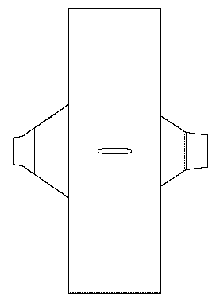

Described in Henshall and ???, the Rogart shirt is coarse linen or wool (the two sources differ) shirt which was found in a grave near Springhill, Knockan, Parish of Rogart, Sutherland. It may date to the 14th Century, but this is a tentative dating.
It is a single piece of cloth, with a single slit for the head in the middle, and the selvages sewn together, except for the armholes. The sleeves are not symmetrical, and were pieced together from a different fabric. The length of the cloth overall is about 90" (228.6 cm), and varies from 29.5" (74.5 cm) wide in front and at the shoulder, to 32" (81.3 cm) wide at the rear hem. The front warp is Z-spun, 17-22 threads per inch (6.7-8.7 threads per cm), and the weft is S-spun, 15-22 threads per inch (5.9-8.7 threads per cm). It was irregularly woven, with a heavier weft for the last 4.5-6.5" (11.4-16.5 cm) at the back hem, and a rear warp of 16-19 threads per inch (6.3-7.4 threads per cm).
Overall the color is a ginger brown, but there are several long bands of darker threads that run the length of the fabric starting 11.25" (28.6 cm) from the left. The bands range from 1 to 4 threads each.
The sleeves warp is Z-spun, 20-23 threads per inch (7.9-9 threads per inch), the weft is S spun, 12-16 threads per inch (4.7-6.3 threads per cm).
Most of the seams are joined by oversewing, and raw edges are turned twice to the back side, and hemmed down. The sleeves has joins with the edges turned in and then sewn to one another. The neck is hemmed on the long side, and blanket stitched at the corners.
Go to Tunic Page; Rogart Site Page
Some Clothing of the Middle Ages - Tunics - The Rogart Shirt, by I. Marc Carlson, Copyright 1999 This code is given for the free exchange of information, provided the Author's Name is included in all future revisions, and no money change hands-